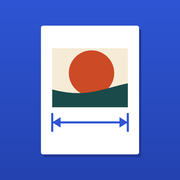
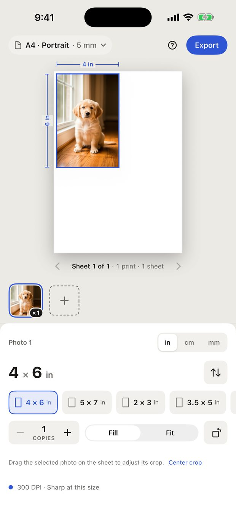
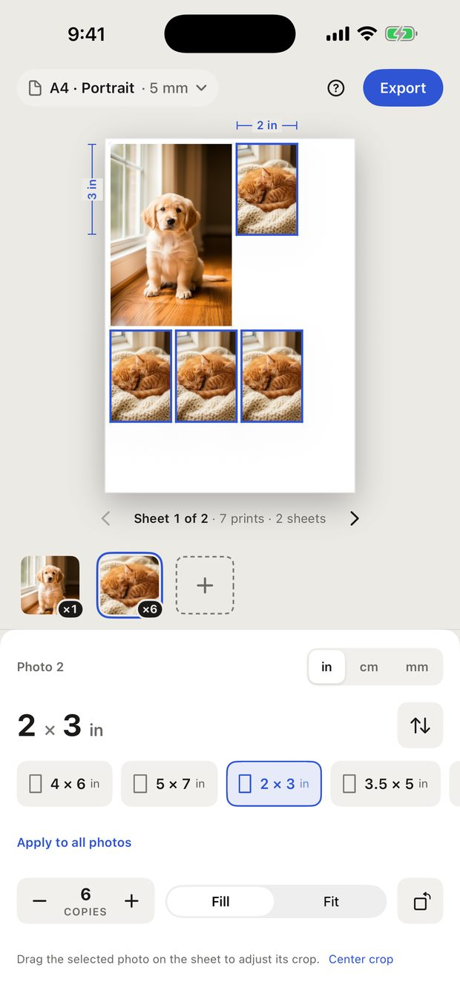
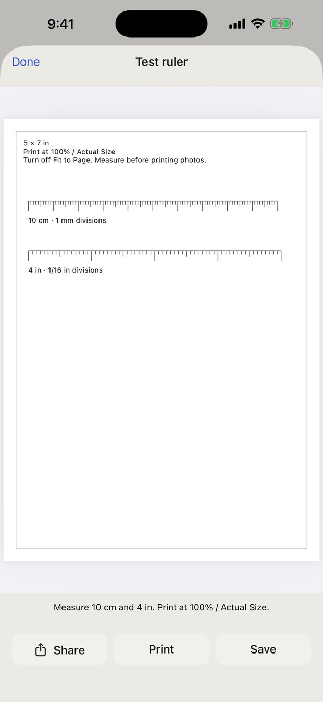

Print photos at real size
Type the size you want. Printfit puts exactly that size on paper — then gives you a PDF that prints true to size on A4, Letter or photo paper.



Fill covers the whole frame and crops whatever doesn't fit. Drag the photo on the sheet to choose which part stays. Fit keeps the entire photo inside the frame, so you get white space when the photo and the frame have different proportions — the visible picture is then smaller than the size you typed.
You can build your whole layout, use every size and every paper, and print the test ruler, all for free. A free PDF export contains the first sheet, with no watermark. Printfit Full unlocks every sheet with one purchase. It is not a subscription.
Open Printing help from the ? button and tap Restore Purchases, signed in with the same Apple Account you bought it with.
Printfit gives you the correct dimensions only. It does not check the background, your head size or position, or anything else the issuing authority requires. Check their rules before you submit a photo.
That reading is the effective resolution at the size you chose. Below roughly 200 DPI a print starts to look soft up close. Enlarging a low-resolution photo cannot bring back detail that the camera never captured.
You can set margins to 0 mm, but borderless printing depends on your printer, and many printers crop the edges in borderless mode. If an exact size matters more than filling the paper, keep a margin and use larger paper.
Up to 50 photos, up to 20 copies of each, and 300 prints in total per project.
Email xufei547@gmail.com. It helps if you include your iOS version, the paper size you chose, and the print settings you used. Please don't send private photos — a description is enough.